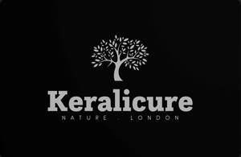

Trade Mark Journal No.2025/013 28 March 2025
UK00004172090 11 March 2025 (3)

- Class 3
- Hair oil; Hair oils; Hair fixing oil; Beard oil; Oil baths for hair care; Facial oil; Shaving oil; Cuticle oil; Oils for hair conditioning; Hair shampoo; Hair lotion; Combing oil; Hair wax; Hair lotions; Hair liquids; Hair spray; Hair moisturizers; Japanese hair fixing oil (bintsuke-abura); Hair liquid; Hair dye; Body oil; Hair shampoos; Body oil spray; Hair conditioner; Hair pomades; Hair gel; Hair cosmetics; Hair emollients; Massage oil; Hair serums; Dyes for the hair; Hair dyes; Hair styling lotions; Hair moisturisers; Hair balm; Hair sprays; Baby hair conditioner; Hair cream; Hair lacquer; Bath oil; Cosmetic preparations for the hair and scalp; Baby oil; Hair balsam; Shampoos for human hair; Suntanning oil [cosmetics]; Body oil [for cosmetic use]; Wax treatments for the hair; Hair lighteners; Hair styling spray; Colouring lotions for the hair; Hair balms; Hair powder; Hair nourishers; Hair styling waxes; Hair creams; Hair styling gel; Hair conditioners; Hair mousse; Hair colorants; Hair masks; Horse oil cream for skin care; Cleansing oil; Hair texturizers; Hair rinses; Hair mascara; Hair relaxers; Lavender oil for cosmetic use; Hair colourants; Hair and body wash; Hair gels; Oils for the skin; Styling sprays for the hair; Rosemary oil for cosmetic use; Shaving oils; Jasmine oil; Hair lacquers; Hair glazes; Hair bleaches; Creams (Cosmetic -); Cosmetic creams; Cosmetics and cosmetic preparations; Sunscreens [for cosmetic use]; Cosmetic moisturisers; Cosmetic soaps; Sunscreen [for cosmetic use]; Cosmetic facial lotions; Facial lotions [cosmetic]; Cosmetic soap; Cosmetic masks; Lotions for cosmetic purposes; Dyes (Cosmetic -); Cosmetic dyes; Tonics [cosmetic]; Facial creams [cosmetic]; Facial creams [for cosmetic use]; Cosmetic powder; Cosmetic preparations; Anti-aging creams [for cosmetic use]; Cosmetic pencils; Pencils (Cosmetic -); Facial cleansers [cosmetic]; Cosmetic kits; Kits (Cosmetic -); Anti-ageing creams [for cosmetic use]; Facial moisturisers [cosmetic]; Cosmetic skin fresheners; Lacquer for cosmetic purposes; Anti-wrinkle creams [for cosmetic use]; Cosmetic creams for the skin; Skin creams [cosmetic]; Pro-collagen for cosmetic purposes; Skin creams [for cosmetic use]; Henna for cosmetic purposes; Facial cream [for cosmetic use]; Serums for cosmetic purposes; Skin cleansers [cosmetic]; Skin balms [cosmetic]; Cosmetic skin enhancers; Cosmetic hair lotions; Collagen for cosmetic purposes; Cosmetic rouges; Cosmetic tanning preparations; Cleansing creams [cosmetic]; Facial scrubs [cosmetic]; Self-tanning preparations [cosmetic]; Facial toners [cosmetic]; Suncare lotions [for cosmetic use]; After-sun lotions [for cosmetic use]; Pomades for cosmetic purposes; Lip coatings [cosmetic]; Skin whitening preparations [cosmetic]; Skin cream [for cosmetic use]; Anti-ageing serums for cosmetic purposes; Cosmetic creams and lotions; Anti-wrinkle cream [for cosmetic use]; Toning creams [cosmetic]; Adhesives for cosmetic purposes; Cosmetic sun-protecting preparations; Astringents for cosmetic purposes; Acne cleansers, cosmetic; Glitter for cosmetic purposes; Cosmetic facial masks; Facial masks [cosmetic]; Sunscreen creams [for cosmetic use]; Cosmetic sunscreen preparations; Toners for cosmetic purposes; Facial washes [cosmetic]; Lip stains for cosmetic purposes; Geraniol for cosmetic purposes; Cosmetic facial packs; Facial packs [cosmetic]; Cosmetic suntan lotions; Skin care lotions [cosmetic]; Cosmetic massage creams; Cosmetic nail preparations; Cosmetic suntan preparations; Retinol cream for cosmetic purposes; Eyelashes (Cosmetic preparations for -); Cosmetic preparations for eyelashes; Cosmetic hand creams; Skin toners [cosmetic]; Skin hydrators for cosmetic purposes; Cosmetic products for the shower; Procollagen for cosmetic purposes; Skin care creams [cosmetic]; Cosmetic creams for skin care; Pencils for cosmetic purposes; Cosmetic eye gels; Gels for cosmetic purposes; Hair care creams [for cosmetic use]; Hair care lotions [for cosmetic use]; Cosmetic sun-tanning preparations; Exfoliating scrubs for cosmetic purposes; Hair tonics [for cosmetic use]; Tooth powders [for cosmetic use]; Self tanning creams [cosmetic]; Cosmetic preparations for slimming purposes; Slimming purposes (Cosmetic preparations for -); Cosmetic nourishing creams; Cosmetic preparations for skin care; Skin care (Cosmetic preparations for -); Ointments for cosmetic use; Skin conditioning creams for cosmetic purposes; Moisturising gels [cosmetic]; Moisturising skin lotions [cosmetic]; Suntan oils for cosmetic purposes; Self tanning lotions [cosmetic]; Cotton for cosmetic purposes; Cosmetic face powders; Moisturising concentrates [cosmetic]; Softening cleanser [cosmetic]; Essences for cosmetic purposes; Lint for cosmetic purposes; Face powders [for cosmetic use]; Artificial nails for cosmetic purposes; Cosmetic eye pencils; Sun creams [for cosmetic use]; Removable tattoos for cosmetic purposes; Beauty care cosmetics; Beauty serums; Cosmetic products in the form of aerosols for skincare; Perfumery products; Beauty gels; Beauty milks; Beauty masks; Masks (Beauty -); Beauty soap; Beauty creams for body care; Beauty milk; Beauty balm creams; Cosmetic products in the form of aerosols for skin care; Beauty serums with anti-ageing properties; Skincare cosmetics; Natural cosmetics; Beauty preparations for the hair; Soap products; Skin care products for animals; Sets of cosmetic oral care products; Distilled oils for beauty care; Beauty care preparations; Cleansing products for the eyes; Facial beauty masks; Cosmetics; Beauty tonics for application to the body; Beauty tonics for application to the face; Hair care lotions; Hair care serums; Hair care serum; Hair care creams; Hair care masks; Hair care preparations; Hair care agents; Cosmetic hair care preparations; Skin care mousse; Skin care cosmetics; Beard care preparations; Body care cosmetics; Hair care preparations, not for medical purposes; Skin care oils [cosmetic]; Skin care preparations; Skin care creams, other than for medical use; Exfoliants for the care of the skin; Facial care preparations; Essences for skin care; Skin, eye and nail care preparations; Hair strengthening treatment lotions; Skin care oils [non-medicated]; Hand masks for skin care; Lotions for face and body care; Hair protection lotions; Soaps for body care; Cleansing milks for skin care; Conditioners for treating the hair; Foot masks for skin care; Perfumed oils for skin care; Body cleaning and beauty care preparations; Milky lotions for skin care; Hair treatment preparations; Hair grooming preparations; Non-medicated skin care preparations; Sun care lotions; Hair conditioners for babies; Non-medicated hair shampoos; Hair permanent treatments; Nail care preparations; Hair bleach; Hair rinses [for cosmetic use]; Deodorants for body care; Toiletries; Antiperspirants [toiletries]; Non-medicated toiletries; Talc [toiletries]; Roll-on deodorants [toiletries]; Sanitary preparations being toiletries; Sponges impregnated with toiletries; Mousses [toiletries] for use in styling the hair; Douching preparations for personal sanitary or deodorant purposes [toiletries]; Non-medicated cosmetics and toiletry preparations; Toiletry preparations; Non-medicated toiletry preparations; Non-medicated toilet soaps; Toilet soaps; Perfumed lotions [toilet preparations]; Paper hand towels impregnated with cosmetics; Laundry soaps; Oils for toiletry purposes; Bath lotions (Non-medicated -); Moisturisers [cosmetics]; Liquid soaps for laundry; Fragrance sachets for eye pillows; Shower creams; Bath powder [cosmetics]; Shampoos; Bath and shower gels; Shampoo; Soaps and gels; Bath soaps; After-sun milk [cosmetics]; Perfumed body lotions [toilet preparations]; Bath and shower oils [non-medicated]; Non-medicated cosmetics; Facial gels [cosmetics]; Cosmetics in the form of lotions; Shaving lotions; Non-medicated toothpaste; Aromatherapy lotions; Shower gels; Scented linen water; Sunscreen lotions; Aftershave lotions; Non-medicated shampoos; Bath and shower gels, not for medical purposes; Soaps for toilet purposes; Refill packs for cosmetics dispensers; Non-medicated hair lotions; Bath gels (Non-medicated -); Shaving soaps; Cosmetic preparations for bath and shower; Scented soaps; Make-up palettes containing cosmetics; Non-medicated shower oils; Liquid bath soaps; Cosmetics for personal use; Cleansers for intimate personal hygiene purposes, non medicated; Shampoos for personal use; Fragrances for personal use; Soaps for personal use; Oral hygiene preparations; Oral care preparations [non-medicated]; Dentifrices in the form of chewing gum; Cosmetic preparations for the care of mouth and teeth; Chewable dentifrices; Chewable tooth cleaning preparations; Dental care preparations for animals; Mouthwash; Dental polish; Dental bleaching gel; Dentifrices in the form of solid tablets; Dental bleaching gels; Gels (Dental bleaching -); Essential oils as perfume for laundry purposes; Peppermint oil [perfumery]; Tissues impregnated with essential oils, for cosmetic use; Citronella oil for cosmetic use; Eucalyptus oil for cosmetic use; Castor oil for cosmetic purposes; Aromatherapy creams; Aromatherapy preparations; Massage oils; Massage oils and lotions; Scented oils; Ethereal oils for fragrancing; Facial massage oils; Aromatic oils for the bath; Essences for fragrancing; Perfume oils; Body massage oils; Massage candles for cosmetic purposes; Oils for perfumes and scents; Aromatherapy pillows comprising potpourri in fabric containers; Bath oils; Non-medicated bath oils; Bath oils (Non-medicated -); Scented water for fragrancing; Massage oils, not medicated; After-sun oils [cosmetics]; Natural oils for perfumes; Cedarwood perfumery; Bath herbs; Shower oils; Bath oils for cosmetic purposes; Ethereal essences and oils; Non-medicated oils; Geraniol for fragrancing; Tanning oils [cosmetics]; Scented body lotions; Potpourris [fragrances]; Non-medicated massage preparations; Facial oils; Mineral oils [cosmetic]; Suntan oils [cosmetics]; Scented bathing salts; Scented sachets; Fragrance sachets; Aromatic potpourris; Scented oils used to produce aromas when heated; Scented body lotions and creams; Perfume oils for the manufacture of cosmetic preparations; Room fragrancing products; Perfumery and fragrances; Cosmetic sun oils; Sun-tanning oils; Incense sachets; Cleansing lotions; Massage waxes; Cosmetics in the form of oils; Perfuming sachets; Cleaning sprays; Cleaning preparations; Washing soda, for cleaning; Cleaning fluids; Wiping cloth impregnated with a cleaning preparation for cleaning eye glasses; Cleaning preparations for cleansing drains; Cleaning foam; Preparation for cleaning dentures; Degreasers for cleaning purposes; Drain cleaning preparations; Cleaning chalk; Dry cleaning preparations; Chalk (Cleaning -); Laundry detergents for household cleaning use; Windscreen cleaning preparations; Oven cleaning preparations; Dentures (Preparations for cleaning -); Cleaning dentures (Preparations for -); Preparations for cleaning dentures; Teeth cleaning (Preparations for -); Preparations for cleaning teeth; Cleaning preparations for the teeth; Preparations for cleaning the teeth; Ammonia for cleaning purposes; Floor cleaning preparations; Cleaning and fragrancing preparations; Dry cleaning fluids; Glass cleaning preparations; Cloths impregnated with polishing preparations for cleaning; Automotive cleaning preparations; Wallpaper cleaning preparations; Tooth cleaning preparations; Foam cleaning preparations; Hair cleaning preparations; Household detergents; Household cleansers; Household fragrances; Household bleach; Household cleaning substances; Cleansers for household purposes; Detergents for household use; Fragrance for household purposes; Soaps for household use; Cleaning substances for household use; Aromatics for household purposes; Industrial abrasives; Industrial soap; Lip rouge; Lip balm; Lip gloss; Lip glosses; Lip balms; Lip tints; Lip cream; Lip gloss palettes; Lip makeup; Lip polisher; Lip liner; Lip liners; Lip pencils; Lip balm [non-medicated]; Lip pomades; Lip neutralizers; Lip cosmetics; Lip balms [non-medicated]; Non-medicated lip balms; Lip conditioners; Lip protectors [cosmetic]; Lip protectors (Non-medicated -); Lip stains [cosmetics]; Baby bottom balm; Lip coatings (Non-medicated -); Eyebrow mascara; Lip care preparations; Eyebrow gel; Cheek rouges; Sun protectors for lips; Lipstick; Eyebrow powder; Nail cream; Nail polish top coat; Creamy face powder; Non-medicated lip care preparations; Powder for forming sculpted finger nail tips; Face blusher; Cheek colors; Face and body glitter; Nail glitter; Face glitter; Eyelash tint; Nail gel; Nail primer [cosmetics]; Non-medicated balm for hair; Cosmetic pencils for cheeks; Nail polish base coat; Creamy rouge; Nail makeup; Beard balm; Facial concealer; Gel nail removers; Loose face powder; Cheek colours; Nail polish remover; Nail base coat [cosmetics]; Shaving balm; Nail polish remover pens; Face cream (Non-medicated -); Nail polish; Eyelid doubling makeup; Eyelid shadow; Eye-shadow; Face powder [for cosmetic use]; Eyebrow colors in the form of pencils and powders; Face powder (Non-medicated -); Eyebrow colors; Eyeliner; Non-medicated mouth sprays; Nail polishing powder; Tooth gel; Eyebrow pencils; Pencils (Eyebrow -); Blemish balm creams; Cosmetic white face powder; Mattifying gel cream; Cuticle cream; Face powder; Tooth powder [for cosmetic use]; Face wipes; Tooth polish; Eye gel; Adhesives for false eyelashes, hair and nails; Eyeshadow; Gel eye masks; Eyelid pencils; Blush pencils; Nail enamel remover; Nail polish removers; Foot balms (Non-medicated -); Face gels; Tooth powder; Eyebrow cosmetics; Blush; Skin balms (Non-medicated -); Non-medicated skin balms; Moisturiser; Exfoliant creams; Exfoliating creams; Moisturisers; Pre-shave creams; Soap (Deodorant -); Deodorant soap; Moisturising creams; Aftershave moisturising cream; Skin cleansing lotion; Anti-ageing moisturiser; Skin moisturiser; Exfoliating scrubs for the face; Moisturizing creams; Cleansing creams; Shaving lotion; Non-medicated cleansing creams; Aftershave creams; Moisturising creams, lotions and gels; Creams (Soap -) for use in washing; Skin moisturizer; Skin cleansers [non-medicated]; Exfoliants for the cleansing of the skin; Wipes impregnated with a skin cleanser; Skin moisturisers; Skin cleansers; Non-medicated moisturisers; Facial cleansers; Facial lotion; Moisturising skin creams [cosmetic]; Skin cleansing cream [non-medicated]; Skin moisturizer masks; Skin lotion; After-shave creams; Antiperspirant soap; Soap (Antiperspirant -); Shaving creams; Dandruff shampoo; Moisturizers; Anti-perspirant deodorants; Facial moisturizers; Bath lotion; Aftershave balms; Moisturising body lotion [cosmetic]; Skin cleansing cream; Non-medicated skin creams; Skin creams [non-medicated]; Skin soap; Shaving soap; Skin moisturizers used as cosmetics; Facial creams [cosmetics]; Exfoliating scrubs for the hands; Anti-ageing creams; Skin moisturizers; Shave creams; After-shave lotions; Bath creams (Non-medicated -); Washing creams; Anti-wrinkle creams; Face creams; Suncare lotions; Skin whitening creams; Creams (Skin whitening -); Gel scrub; Non-medicated skin lotions; Sunscreen creams; Shaving balms; Cloths impregnated with a skin cleanser; Facial creams; Aftershave balm; Exfoliants; Emollient shampoos; Exfoliating body scrub; After-sun creams; Skin creams; Creams for the skin; Cleansing cream; Face scrubs (Non-medicated -); Exfoliating scrubs for the feet; Anti-aging moisturizers used as cosmetics; Soap powders; Bath creams; Facial lotions; Non-medicated skin clarifying lotions; Aloe soap; Soap powder; Non-medicated skin serums; Skin lotions; Lotions for the skin; Dermatological creams [other than medicated]; Anti-aging moisturizers; Exfoliating scrubs for the body; After-shave balms; Moisturizing body lotions; Hair moisturising conditioners; Cuticle conditioners; Hair conditioner bars; Laundry fabric conditioner; Skin conditioners; Fabric conditioners; Nail conditioners; Conditioners for use on the hair; Conditioners in the form of sprays for the scalp; Conditioning balsam; Conditioning creams; Conditioning preparations for the hair; Conditioning sprays for animals; Shaving gel; Shower gel; After-shave gel; Shave gel; Bath gel; Lavender gel; Soaps in gel form; Shower and bath gel; Bath and shower gel; Shaving gels; Gel sprays being styling aids; Pre-shave gels; Aloe vera gel for cosmetic purposes; Refill packs for shower gel dispensers; Preparations for removing gel nails; Dishwasher detergents in gel form; Sun tan gel; Age retardant gel; Aftershave gels; Bath gels; Cleansing gels; Soapy gels; Cosmetics in the form of gels; Foaming bath gels; Styling gels; Hair protection gels; Hair styling gels; Styling gels for the hair; Gels for use on the hair; Gel eye patches for cosmetic purposes; Gels for fixing hair; Body gels; Body gels [cosmetics]; Tanning gels [cosmetics]; Eye gels; Gels for cosmetic use; Make-up removing gels; Hand gels; Sun-tanning gels; Shaving mousse; Body and facial gels [cosmetics]; Glitter in spray form for use as a cosmetics; Shaving foam; Foam for use in shaving; Toilet cleaning gels; Baby shampoo mousse; Shaving preparations in liquid form; Shoe polish and creams; Moist wipes impregnated with a cosmetic lotion; Shower and bath foam; Bath and shower foam; Shower cream; Cream for whitening the skin; Whitening the skin (Cream for -); Pre-shave foams; Liquid eyeliners; Liquid soap; Nail varnish remover [cosmetics]; Anti-ageing serum; Skin calming serum; Anti-aging serum for cosmetic use; Skin relief serum [cosmetic]; Eye correction serum; Facial serum for cosmetic use; Hairstyling serums; Moisturizing milk; Skin hydrators; Skin emollients [non-medicated]; Tissues impregnated with a skin cleanser; Skin hydrators being injectable dermal fillers; Non-medicated scalp treatment cream; Moisturizing preparations for the skin; Skin emollients; Skin cream; Cosmetics containing hyaluronic acid; Oils for moisturising the skin after sunbathing; Skin tonics [non-medicated]; Creams for firming the skin; Body mask lotion; Anti-aging cream; Non-medicated stimulating lotions for the skin; Cosmetics for the treatment of dry skin; Skin make-up; Moisture body lotion; Body moisturisers; Hair tonic [non-medicated]; Creams (Non-medicated -) for the body; Scalp treatments (Non-medicated -); Anti-aging creams; Anti-wrinkle cream; Massage creams, not medicated; Massage gels other than for medical purposes; Massage gels, other than for medical purposes; Body and facial oils; Foot scrubs; Non-medicated foot soaks; Foot smoothing stones; Foot powder [non-medicated]; Soap for foot perspiration; Foot perspiration (Soap for -); Non-medicated foot cream; Non-medicated foot lotions; Foot deodorant spray; Deodorants for the feet; Liquid soap used in foot baths; Foot care preparations (Non-medicated -); Liquid soap used in foot bath; Cleansing balm; Cleansing mousse; Skin cleansing foams; Hand cleansers; Cleansing foam; Facial cleansing grains; Cleansing masks; Cleansing milk; Feminine hygiene cleansing towelettes; Pre-moistened towelettes impregnated with a detergent for cleaning; Detergent soap; Refill packs for body cleansing product dispensers; Disposable wipes impregnated with cleansing compounds for use on the face; Pre-moistened towelettes impregnated with dishwashing detergent; Skin toner; Make-up remover; Facial wipes impregnated with cosmetics; Liquid soap for dish washing; Skin cleaners [non-medicated]; Body cleansing foams; Skin cleaning and freshening sprays; Loofah soaps; Facial wash; Hydrating creams for cosmetic use; Pre-moistened cosmetic wipes; Body cream soap; Cleaner for cosmetic brushes.
Kurian Roy